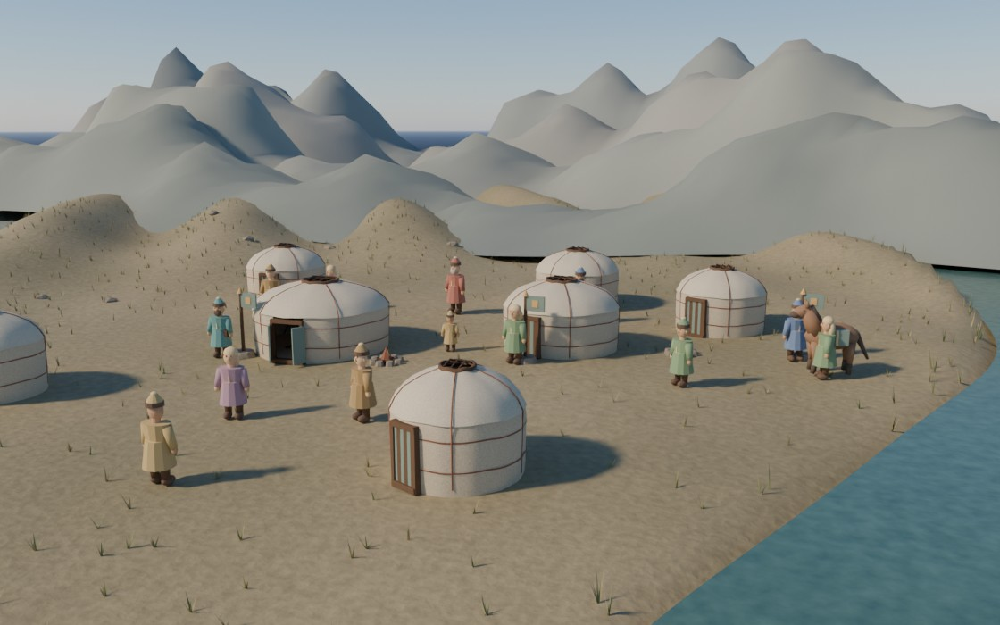

1465–66ХАНДЫҚ
Қазақ хандығының құрылуы
Жас шабарман болып, Керей мен Жәнібекке хабар жеткіз. Өткелді барлап, көшті қонысқа аман бастап кел. Киіз үйге кіріп, тұрмыс бұйымдарын зертте.
XV ғасырдың ортасы. Керей мен Жәнібектің жұрты Шу бойындағы Қозыбасыға қоныстанды. Шабарман болып ауылды арала, тұрғындармен сөйлес, өткелді барла және киіз үйдің бұйымдарын зертте.

Керей мен Жәнібектің көшуі жаңа мемлекеттің қалыптасуына қалай жол ашқанын зертте.
Алдымен тарихи деректерді оқы.
Керей мен Жәнібек сұлтандар өздеріне ерген жұртпен бірге Шығыс Дешті Қыпшақтан Батыс Жетісуға көшті.
Моғолстан ханы Есенбұға көшіп келгендерді қабылдап, Шу бойындағы Қозыбасы өңірінен қоныс берді.
Мұхаммед Хайдар Дулати «Тарих-и Рашиди» еңбегінде қазақ сұлтандарының билік жүргізе бастауын хижраның 870 жылына жатқызады. Бұл 1465–1466 жылдарға сәйкес келеді. Хандықтың қалыптасуы бірнеше кезеңнен өтті.
Қазақ хандығының құрылуы туралы дерек ↗ · Құрылған мерзімі туралы зерттеу ↗
Жас шабарман болып, Керей мен Жәнібекке хабар жеткіз. Өткелді барлап, көшті қонысқа аман бастап кел. Киіз үйге кіріп, тұрмыс бұйымдарын зертте.
Бес тапсырма арқылы оқиғалардың ретін, тарихи тұлғаларды және дерек пен ойынның айырмасын тексер.
Керей мен Жәнібектің Жетісуға көшуі Қазақ хандығының қалыптасуына қалай ықпал етті? Жауабыңа бір дерек қос. Содан кейін ойын үшін жазылған бір көріністі ата.
Жазба осы браузерде сақталады.